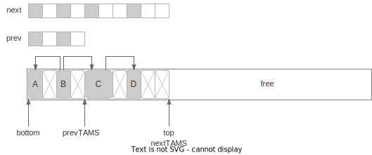

并发标记
本章比较长，请耐心阅读。主要介绍并发标记算法的各个步骤和细节。
什么是并发标记
前面我们提到 垃圾回收 = 识别 + 回收，并发标记就是识别的部分，需要识别出内存里有哪些对象还存活，哪些对象已经没用了，可以回收。
标记与 GC Roots
首先有一部分对象我们会认为肯定还活着，一般称为 GC Roots，例如线程堆栈上的变量，如传入方法的参数，创建的临时变量等；例如系统加载的一些类等等1。
已知 GC Roots 必不可能是垃圾，那么从 GC Roots 引用的对象，必不可能是垃圾。因此并发标记中的“标记”，本质上就是从 GC Roots 出发，递归遍历所有引用的对象，把它们标记为“live（存活）”，这样没有标记到的就是垃圾，可以被清除。
标记与三色算法
标记本质是在做树/森林的遍历，遍历每一个“可达”的对象，遍历过程中有三个状态，为了方便讨论，通常用三种颜色对应三个状态：
- Black（黑）: 对象被访问了，且对象发出的引用都加入遍历队列。之后标记程序不会再访问该对象
- Grey（灰）: 对象被加入了遍历队列，但还没有被标记程序访问。标记程序之后会访问它
- White（白）: 标记程序还没有感知到它的存在，可能是还没遍历到，也可能是它本身不可触达
在下面的讨论中我们会用这些概念来讨论一些扫描机制的边界条件，但记住颜色的说法只是方便讨论遍历中节点的不同状态而已。下面再来张图方便直观理解遍历过程：

细节实现上，上图展示的是宽度搜索，但标记本身并不依赖具体的实现。G1 的实现有点像是宽搜和深搜的复合版本，以平衡效率和空间占用。实现的方式可以参考论文《A generational mostly-concurrent garbage collector》。
并发与 SATB
上一章提过 GC 算法的其中一个目标是减少停顿2，这里的停顿指的是应用程序的停顿。但像标记的工作，要扫描的存活对象客观上就有那么多，可能就算砸锅卖铁也需要那么长的时间，怎么减少停顿？其中一个想法是“并发”3，应用程序工作的同时，拿部分资源做 GC 的事，而不需要将应用程序暂停。
那么代价呢？
- GC 吞吐变差。如果完全停顿，GC 可以砸锅卖铁用所有资源，现在单位时间内只能用部分资源，GC 的吞吐必然变差
- GC 实现更复杂。例如三色算法，考虑的是“静态”的引用树，但在并发模式下，标记到一半时，树的结构可能发生变化，于是算法得有相关的实现来处理这些情况。
吞吐问题是效率问题，基本只能靠不断优化算法与实现细节。引用结构变化问题是正确性问题，目前有多种解法，G1GC 采用的是 Snapshot At The Beginning(SATB) 的解法4。核心思想是：标记开始前对当前的引用树做个快照，本次标记只对快照负责，对快照后变为垃圾的对象视而不见（这些垃圾也被称为浮动垃圾 floating garbage，会在下次 GC 时被回收）。
标记位图
要把对象标记成“存活”或“垃圾”，这个标记放哪？
我们知道 Java 的每个对象有对象头（object header），一种想法是在对象头里拿一个 bit 来记录这个信息，但这种做法从各种角度都不太好，如需要访问的内存散落各处，对缓存不友好；难以处理并发访问的一些情况；创建子进程时对内存的修改会触发操作系统的 Copy on Write 机制，容易浪费内存。
G1GC 使用的是标记位图，可以类比成为现实世界创建一张地图，标记的时候只在地图上标记，可以解决上面说的相关问题。位图需要占用额外的内存，但大小有限，例如每个对象大小是 8 字节，一个对象只需要 1 bit 标记，于是标记位图大小只需要内存的1/64 即可。
另外，要实现上面提到的 SATB 快照也需要额外记录一些信息，因此 G1 实际上需要记录这么一些内容：

bottom 指针指向区域的开始，top 指向区域内空闲空间的开始。prev 和next代表的是标记位图。额外地还有 TAMS(Top at marking start) 指针，记录的是标记开始时 top 的值，也分 prevTAMS, nextTAMS 两个版本，是实现 SATB 快照用的。
注意到位图和 TAMS 都有 prev 和 next 两个版本，这里 prev 版本是上一次标记的结果，而 next 版本记录的是本次进行中的状态5。TAMS 作用是做 SATB
的快照，对引用树做快照肯定不能复制一份内存，G1 的做法是在标记开始时将 top 值记录为 nextTAMS，本次标记只处理 [bottom, nextTAMS] 之间的对象，同样地回收时只回收 [bottom, prevTAMS) 间的对象6。由于 mutator 并发执行，标记过程中如果创建新对象，top指针会增加，而在 [TAMS, top] 之间的对象，都当作是存活的对象。
并发标记整体步骤
注意下文介绍的步骤和《深入 Java 虚拟机》一书里介绍的不一样，这里采用了 Oracle 教程 的说法。
- 初始标记 (Initial Mark)。标记 GC Root 能直达的对象，STW
- 根区域扫描 (Root Region Scan)。标记所有从 root region 可达的对象，在 G1 里特指 Survivor 区域。该步骤是为了处理标记与 evacuation 并发执行引发的一些问题。不需要 STW，但需要在下次 evacuation 前完成
- 并发标记 (Concurrent Mark)。使用三色算法标记所有可达的对象。与 mutator 可并发执行
- 最终标记 (Remark)。在步骤 ②、③ 中 mutator 可能更改了对象的引用关系，这些关系用 SATB 写屏障做了记录，该步骤会扫描这些记录并做标记。STW
- 收尾工作 (Cleanup)。主要包含几部分
- 存活对象计数。统计每个区域的存活对象信息，供 evacuation 使用。STW
- 清理 Remembered Sets(RSet)。STW
- 释放空区域。并发执行。
可以看到步骤很复杂，包含了很多细节。对于初次了解来说可以简单理解成标记过程中有一些不得不 STW 的操作，于是把三色算法拆成了 “停顿 -> 并发 -> 停顿 -> ...” 这样的步骤，之后再理解为什么不得不停顿。
① 初始标记 (Initial Mark)
初始标记是用来标记 GC Root 能直达的对象，需要 STW 。下图展示了初始标记的操作：

GC 线程首先会创建标记位图 next，再将 nextTAMS 置为当前 top 的值。另外由于标记阶段只处理 [bottom, nextTAMS) 之间的对象，因此 next 位图的大小也与top对齐，大小为 (nextTAMS - bottom)/8。
Initial Mark 阶段会扫描所有的 GC Root，将 GC Root 直接引用的对象标记为灰色（加入待遍历的队列），如上图中的对象 C。这个步骤称为根扫描(Root Scan)。
这个过程是 STW 的，如果根扫描的过程中根被 mutator 修改了，这种情况很难处理。虽然 G1GC 中使用写屏障（write barrier）可以感知对象的修改，但大多数根并不是对象，无法用写屏障感知，因此需要暂停 mutator 的执行。
另外实现上，Initial Mark 阶段其实是触发一次 Young GC（在 G1 中称为 Fully Young Evacuation），在 Young GC 对 GC Root 扫描的过程中顺便做标记。因此在文档上，会说 Initial Mark 这个操作是 "piggy-backed"（趴在猪上，搭载的意思）。
② 根区域扫描 (Root Region Scan)
这个阶段是对算法实现的一个优化7，对理解算法没有太大帮助，并且需要一些后续章节的知识才能理解，可以考虑先跳过，后续再回头看（不理解官方文档为什么要放在这里）。
我们知道标记和 Young GC 可以并发执行，如果并发标记进行到一半，Young GC 开始执行，那么 Young GC 除了复制存活对象外，还需要维护标记相关的状态，如更新新老区域对应的标记位图，在标记队列中的对象也需要做更新。实测下来很耗时间8。要理解哪些可以优化，需要先剧透一些信息。
GC 做回收的时候，还是会自己扫描对象引用的，并不会直接复用标记的结果。由于 G1 每次只回收部分区域，如果扫描引用需要扫描整个堆，就太浪费时间了，所以 RSet 就是其中一个优化，只需要找到需要回收区域的 RSet，就能知道有哪些区域引用自己了。
但问题还没解决，即使通过 RSet 找到了引用自己的区域，怎么知道这些区域里哪些对象是活着的？这就是并发标记要解决的，标记能回答，在 TAMS 前的对象都标好了，TAMS之后的对象都当成是活的。因此可以理解为，标记只是为回收提供“额外 root”信息的。
另外由于不管是 Young GC 还是 Mixed GC，Eden 和 Survivor 的所有区域都会被回收，所以这些区域的 mark 信息本质上是没用的，因为 evacuation 时本来就会扫描它们中的所有对象。于是可以推论标记的产出，是 Old Gen 里不被回收的区域中对象的存活信息。
而我们知道 Young GC 只回收 Eden 和 Survivor，过程中需要维护标记信息是防止移动 Eden 和 Survivor 的对象导致扫描出错。那只需要在并发 Young GC 发生之前，就把 Young Gen 的对象都扫完就行了。扫完后 Young Gen 发生的事都跟并发标记无关了。
由于 Initial Mark 本质上是做了一次 Young GC，可以认为 Initial Mark 快照时， Eden 是空的，所以在下次 Young GC 前，只需要扫完 Survivor 区即可。这个过程被称为根区域扫描，而 Survivor 区也是目前唯一的根区域。
③ 并发标记 (Concurrent Mark)
并发标记阶段是用三色算法递归遍历所有引用的过程。另外由于 mutator 也在并发执行，因此需要处理 mutator 修改的引用。
下图表示的是并发标记结束后区域的状态，对象 A 和 E 都被标记了。对于 E 这种占用多个标记位的对象，只有起始位会被标记。在标记过程中，对象 J、K 是新创建的，在 SATB 的机制之下，它们会被认为是存活对象，标记过程完全不会处理它们，只是在 evacuation 使用标记时，会把它们当作是存活的对象。

标记遗漏问题
mutator 与标记并发执行，可能引发两种问题：
- 新增对象，从步骤 ① 中标记的 GCRoot 出发不一定可达，这点在 SATB 中通过
nextTAMS解决 - 引用修改，同时满足下列两个条件的修改会造成正确性问题
- 应用线程增加了一个 Black -> White 的引用
- 同时应用线程断开了 Grey -> White 的(直接或间接)引用
第二个问题如下图所示：

考虑处于图 (a) 状态时标记暂停，此时 mutator 执行 (b) 增加了 A->C 的引用，再执行 (c) 操作断开 B->C 的引用。此时标记继续，虽然对象 B 在标记队列里，但此时 B->C 的引用已经断开，因此从 B 对象出发不会对 C 做标记，而，由于在步骤 (a) 时 A 出发的引用都扫描过了，所以 A 已经标黑，于是后续的标记过程都不会再访问 A，于是也不会从 A 出发对 C 做标记。导致对象 C 被标记遗漏了。
SATB
对以上两个标记遗漏问题，G1 中使用 SATB(Snapshot At The Beginning) 的机制：
- 对于新增对象，上面提过，在标记开始时将
top的值记录为nextTAMS，大于nextTAMS的对象肯定是标记开始后新增的，无论它们实际是否存活，都认为是存活的。 - 对于引用修改问题，SATB 引入了 SATB 写屏障，在 mutator 对引用做修改时，记录赋值前的对象（即上例中的对象
C），并把它们标记成灰，防止遗漏。
这两个操作从效果上等价于在标记开始时给所有旧的引用做了快照，标记只对快照的引用关系进行，而对快照后发生的引用修改视而不见，因此称为 SATB。
SATB 专用写屏障
所谓的“写屏障”，指的是应用程序的 Java 代码里，对象的域上发生了任何的修改，都额外执行一段代码，SATB 专用的写屏障执行的伪代码如下（后续会介绍 G1 还有维护 RSet 用的写屏障）：
1: def write(field, new_val):
2: satb_write_barrier(field)
3: *field = new_val
4:
5: def satb_write_barrier(field):
6: if $gc_phase == GC_CONCURRENT_MARK:
7: old_obj = *field
8: if old_obj != NULL:
9: enqueue($current_thread.satb_local_queue, old_obj)
当执行 obj.field = new_val 时执行 write 方法，注意到satb_write_barrier并不需要知道 new_val 的值，但它由于它需要记录修改之前的值，因此需要在第 3 行之前执行，因此这个写屏障也叫写前屏障（pre-write barrier）。
第 6 行 用来判断当前是不是处于并发标记的阶段；第 8 行判断 old_obj 是否为NULL，如果是 NULL 则不做任何处理；第 9 行在 old_obj 不为 NULL 时将其加入到当前线程自己的 satb_local_queue 中。因为目的是对 old_obj 发出的引用做标记，如果是
NULL 就没有什么可标记的了。
另外注意，把一个对象标成灰需要做两件事，在位图上做标记，同时将对象加入标记队列中，上面的算法只加入队列并没有处理位图，这点与原版的算法（称为汤浅算法，由汤浅太一于 1990 年开发）不同。位图的处理会由其它线程完成，写屏障由 mutator 执行，减少写屏障的开销能减少 mutator 的负担。
SATB 队列
一个功能如果涉及多线程，都要考虑同步带来的开销，SATB 的实现也是如此。SATB 没有使用一个全局的大队列，而是每个 mutator 线程各自持有自己的队列，在本地队列装满后（默认大小 1KB），会被添加到全局的SATB 队列集合中。这些队列里的对象，可以认为都是灰色的待标记的对象9。

并发标记阶段，GC 线程会定期检查 SATB 队列集合的大小，如果发现有队列，则会对队列里的对象进行标记和扫描。另外对 SATB 队列的处理，优先级会比常规的三色标记更高，毕竟 SATB 队列占了额外的资源，应该尽快处理，而其它引用关系都在堆里，都是“死”的。
SATB 写屏障与多线程执行
这是《深入 Java 虚拟机》第 2.5.3 一节中额外提到的一个正确性疑问，对于理解 SATB 中的不变性（invarient）有帮助。考虑上面写屏障的代码（按书里的样例重写了）：
1: def satb_write_barrier(field, new_val):
2: if $gc_phase == GC_CONCURRENT_MARK:
3: old_obj = *field // ①
4: if old_obj != NULL:
5: enqueue($current_thread.satb_local_queue, old_obj) // ②
6: *field = new_val // ③
注意到写屏障的代码中从 ① 到 ③ 没有加锁的操作，那考虑下面的场景：
*field的值是obj0（的地址）t1（线程 1）想在*field中写入obj1t2（线程 2）想在*field中写入obj2
现在考虑这样的执行顺序：
t1执行 ①：old_obj = obj0t2执行 ①：old_obj = obj0t1执行 ②：将obj0添加到 SATB 队列t2执行 ②：将obj0添加到 SATB 队列t1执行 ③：*field = obj1t2执行 ③：*field = obj2
最终 *field 的值为 obj2，但我们发现 t1 中途写入的 obj1 并没有被加入到
SATB 队列中，这会不会导致标记遗漏呢？
实际上并不会，我们先逻辑视角来看，SATB 只负责处理快照前的引用关系，要保证快照前可达的对象，即使 mutator 修改了引用也能被正确标记，这也是写屏障关心修改前对象的原因。那么对于 field 来说，之前可达的只有 obj0 这一个对象，因此只要保证obj0 进队列就可以了。而 obj1 是快照后新增的引用，原则上就是不需要处理的。
当然逻辑上的道理不一定能说服我们，我们考虑实际实现。我们要执行 obj3.field = obj1时，obj1 肯定也是被某个指针引用的，不管它是栈上的临时变量，还是另一个对象的域。我们假设它是 obj4.field，于是上面的过程引用关系变化如下图：

整个过程中，SATB 保证了 obj0 标灰，那 obj1 呢？obj1 还被 obj4 引用着，不管当前 obj4 是白还是灰，最终都能访问到 obj1，但这都跟 obj3 没有关系了。如果后续 obj4 断开了和 obj1 的引用，obj1 也能被对应的写屏障捕捉，标成灰色，但同样的，也跟 obj3 无关了。
④ 最终标记 (Remark)
如果理解了 SATB 机制，那么最终标记要做什么也很容易理解了。SATB 写屏障队列的处理和标记过程是并发的，那么总需要有一个时机“扫描残留的 SATB 本地队列”，而要清空队列就要保证此时没有新的修改，于是需要暂停 mutator，所以这是个 STW 的过程。
如下图，扫描完 mutator 的本地 SATB 队列后，对象 G，H 也会被标记，且它们的引用 I 也会被标记。

Remark 阶段结束后，所有存活对象都被标记，不带标记的对象都认为是垃圾了。
另外实现上 Remark 阶段还会做一些额外的操作，如弱引用处理（reference processing）、类卸载（Class Unloading）、释放空的区域、重建 RSet10 等，但这些都是实现细节，这里不展开。
⑤ 收尾工作 (Cleanup)
从 Oracle 的文档来看，收尾工作有这么几个11：
- 存活对象计数。统计每个区域的存活对象信息，供 evacuation 使用。STW
- 清理 Remembered Sets(RSet)，标记阶段能确定一些空区域，它们的 RSet 可以清理。STW
- 释放空区域。并发执行。
下面我们主要介绍存活对象计数，以及上面没提的，为下一次标记做的准备。
存活对象计数
标记是为回收服务的，在 G1 的回收阶段，有一个重要决策是判断回收哪些区域的性价比更高。而这就依赖标记阶段提供关于区域有多少存活对象的信息。
这个步骤会扫描各区域的 next 标记位图，统计区域内存活对象的字节数，然后存入区域内的 next_marked_bytes，看名字也能想到，那肯定也有对应的
prev_marked_bytes 字段，它们和 next, prev 类似，一个代表进行中，一个代表已完成。
下图中存活的对象有 A, C, E, G, H, I，因此统计共得 56 字节。这里对象 E 虽然在标记位图里只有一个 bit 标记，但计算大小时要按对象大小 16B 计算。在 [nextTAMS, top) 间的对象隐式地被作为存活对象，不需要在这里单独计数。

准备下一次标记
前面提到标记位图，TAMS 指针、marked_bytes 都有两份，其中 prev 代表（上次）已完成的状态，next 代表标记中的状态，现在标记结束了，需要将 prev 的值置为
next，并重置 next，如下图：

总结
标记阶段最终有两个主要的产出
prev标记位图 +prevTAMS，用于有哪些对象是存活的prev_marked_bytes用于每个区域有多少存活对象，后续 evacuation 选择区域使用
而理解并发标记，最重要的是理解标记遗漏问题以及 SATB 机制，这些都在文章里介绍了。
推荐阅读
- GC Algorithms: Implementations plumbr.io 的 GC 教程，对 G1 算法有很详细的描述
- Getting Started with the G1 Garbage Collector Oracle 的官方教程
- Concurrent Marking in G1 JDK 开发 Thomas Schatzl 写的关于并发标记的文章
Garbage Collection Roots Eclipse Memory Analyzer 总结的
在本书中，没有特别说明的情况下，“停顿”（Pause）都指的是 stop the world 停顿
注意并发与并行的区别，这里不多做讨论，请读者自行查阅相关概念
还有一些其它做法，如 CMS 中使用的是 incremental update
JDK-6888336 里的 comment 有更详细的描述
JDK-8210708 这个优化后，next bitmap 不复存在，这个修改会进 JDK 20
细节上回收时 [prevTAMS, top) 间的对象也是可能被回收的，这个后续会讨论，这里这个说法不影响算法的理解
JDK-7112743 提到 26G 内存，18 个 worker 下花了近 1.8s。
实际上 write barrier 可能会记录 TAMS 之后的对象，这些对象后续处理里可以丢弃
JDK-8180415 在并发标记阶段重建 RSet，进入 JDK 11
本人看 JDK 源码经验尚浅，如有错误，欢迎指出
实际看 JDK 11 源码，发现实际实现跟文档里说的内容差异比较大，不确定是不是文档和版本不同步。例如这里说的几个步骤，其实都算在 Remark 阶段，而实际的 CleanUp 只包含 RSet 重建的内容。另外对 bitmap 的重置和 TAMS 的重置也不在一起执行。